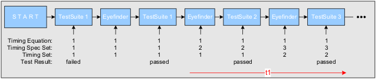
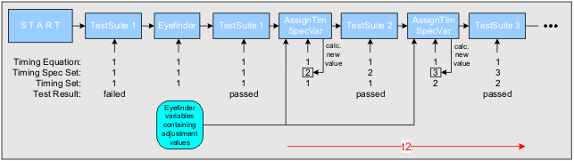

AssignTimSpecVar test method
In a high volume manufacturing (HVM) environment it gives more flexibility and saves execution time if you use the test method AssignTimSpecVar (in class testmethodlib.XDR_Tools) instead of several EyeFinder test suites within a test flow for XDR memory testing.
Note The calibration needs to be done in each combination of timing set and spec set
combination used in the test flow.
The following example shows the difference between the usage of the Eyefinder and AssignTimSpecVar test methods.
The difference between the test suites is a different set of timing primaries.
Examples
Testflow using multiple EyeFinder test suites:
(Test suite 1 fails because it is executed outside the 'eye').

Same test flow using AssignTimSpecVar:

Time saving
Save execution time: t2 << t1!